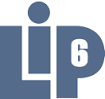

Elise Challan-Belval
Scrum master d'application web et natives
Crédit Mutuel Arkéa
Contact : elise.challanbelval(at)gmail.com

Expérience professionnelle
-
01/2014Crédit Mutuel Arkéa
Durée : 1 an et 4 mois
-
03/2012
 ASI Informatique
ASI Informatique
Durée : 1an et 11 mois
Arkéa
GREF
-
03/2012ABAK Systèmes
Durée : 2ans et 1mois
Simulation de scène militaire
Automatisation des tests pour un logiciel de chiffrement
-
04/2009As An Angel
Durée : 6 mois
Amélioration d'un gestionnaire de dialogues
-
07/2008 Laboratoire d'informatique de Paris 6
Durée : 2 mois
Implémentation d'un algorithme de recherche de communauté
Computer Science Skills
Languages
Java, Javascript,SQL, C++, HTML,CSS, Javascript, Python, Flex, Actionscript, Php, Octave, UML, XML, Prolog, Clips,VRML
Frameworks
Jalios CMS, J2EE, Struts, Spring, Thrift, GWT, Eactivity Hibernate
IDE
IntelliJ, Eclipse, Visual Studio, Netbeans
Bases de données
SQL, MySQL, MongoDB
Outils
SVN, Jenkins, ANT, JIRA, Teamtrack, Jmeter, TestComplete, Salome TMF, Mantis, Blender3D, ArgoUML
Formation
2009
Master 2 d’Informatique, spécialité Intelligence Artificielle et aide à la décision, parcours Interface et Communication Homme-Machine Paris 6, Pierre et Marie Curie (75)